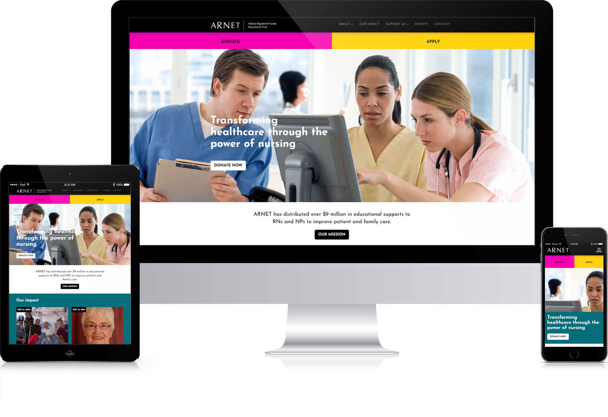
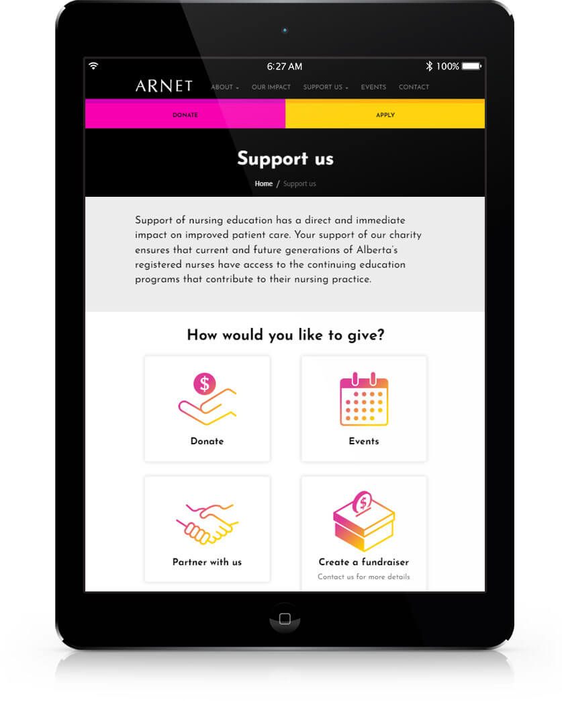
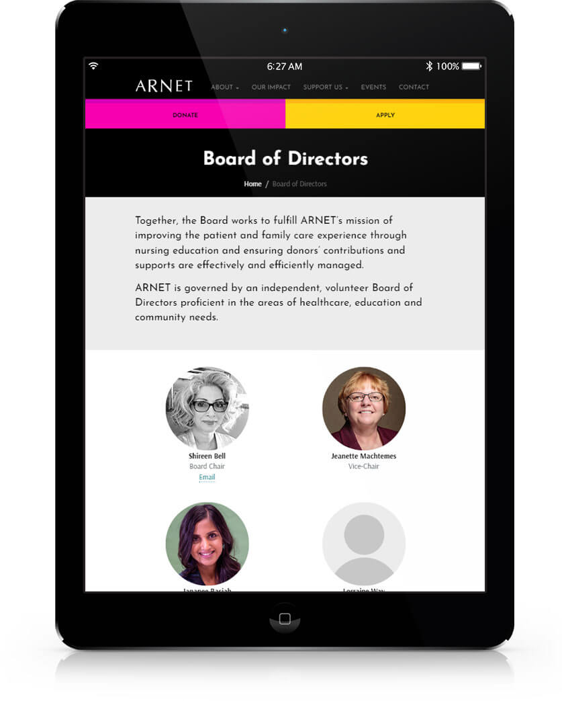

ARNET website
Description
A mobile-first and WCAG-compliant website for the Alberta Registered Nurses Educational Trust (ARNET) to replace their outdated WordPress site. The new website had to present a balanced focus on content for dual audiences (donors and applicants) such as donation information, a blog of impact stories, and a calendar of fundraising events to participate in. Drawing inspiration from the website, ARNET updated their branding to follow my design.
Tools used:
- Adobe: Photoshop, Illustrator
- CMS: Progress Sitefinity
Context
The Alberta Registered Nurses Educational Trust (ARNET) had an appetite for a new website but did not have capacity for a redesign. The College and Association of Registered Nurses of Alberta (CARNA), a closely related organization, had just adopted Progress Sitefinity as their content management system. CARNA provided web support for ARNET and I, at the time a front end developer for CARNA, suggested ARNET migrate their website from WordPress to Sitefinity to improve CARNA's ability to support them.
The ask
ARNET initially asked for a one-to-one migration of their WordPress website to Progress Sitefinity. Since they already wanted to redesign their website, I suggested they allow me to do it. With the change in scope, ARNET included the following in their ask for a redesign:
- Focus on giving and taking, participation in events
- Blog featuring impact stories
- Address what donors are asking: "What impact am I making?"
- Address what applicants are asking: "How much am I getting? What opportunities are available? How do I decide?"
- Be colourful (despite their brand colours at the time being only black and white)
- Frame sponsors as partners
Result
- ARNET staff had an enterprise-level platform with personalized user interfaces to edit their own web content
- ARNET revised their brand to match the look and feel I gave to their website

The ARNET website on various devices


Illustrations and visuals of the ARNET website